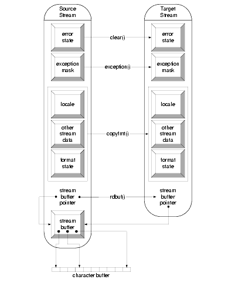

Stream objects cannot simply be copied and assigned. Let us consider a practical example to see what this means. A program writes data to a file if a file name is specified on program call, or to the standard output stream cout if no file name is specified. You should write to one output stream in your program; this stream can be either a file stream or the standard output stream. The most obvious way to do this is to declare an output file stream object and assign it to cout, or to use cout directly. However, you can't do it this way:
#include <iostream> // for cout, endl
#include <fstream> // for ofstream
int main(int argc, char argv[])
{
std::ofstream fil;
if (argc > 1)
{ fil.open(argv[1]);
std::cout = fil; // can't do this !!!
}
// output to cout, for example
std::cout << "Hello world!" << std::endl;
}
This solution is bad for at least three reasons. First, the predefined stream objects std::cin, std::cout, std::cerr, and std::clog (and their wide character counterparts) have special properties and are treated differently from other streams. If you could reassign them, as done with cout in the example above, you might lose some of their special properties. Second, if allowed, assignment and copying of streams would be hazardous due to the possibility of the two copies sharing the same stream buffer. Which of the copies would be responsible for deleting the buffer object? For these reasons, the base class for iostreams has private assignment and copy constructors to prevent you from doing this.
NOTE -- Stream objects must never be copied or assigned to each other.
To achieve the equivalent effect of a copy, you might consider copying each data member individually. This can be done as follows:
int main(int argc, char *argv[])
{
std::ofstream out;
if (argc > 1)
out.open(argv[1]);
else {
out.copyfmt(std::cout); //1
out.clear(std::cout.rdstate()); //2
out.basic_ios<char>::rdbuf(std::cout.rdbuf()); //3
}
// output to out, for example
out << "Hello world!" << std::endl;
}
Please note the little snag here. After the call to rdbuf(), the buffer is shared between the two streams, as shown in Figure 30:

Whether or not you intend to share a stream buffer among streams depends on your application. In any case, it is important that you realize the stream buffer is shared after a call to rdbuf(); in other words, you must monitor the lifetime of the stream buffer object and make sure it exceeds the lifetime of the stream. In our little example above, we use the standard output stream's buffer. Since the standard streams are static objects, their stream buffers have longer lifetimes that most other objects, so we are safe. However, whenever you share a stream buffer among other stream objects, you must carefully consider the stream buffer's lifetime.
The example above has another disadvantage we haven't considered yet, as shown in the following code:
int main(int argc, char *argv[])
{
std::ofstream out;
if (argc > 1)
out.open(argv[1]);
else {
out.copyfmt(std::cout); //1
out.clear(std::cout.rdstate()); //2
out.basic_ios<char>::rdbuf(std::cout.rdbuf()); //3
}
out << "Hello world!" << std::endl;
}
| //1 | Copy the values of member variables (other than the streambuffer and the iostate) in cout to out. |
| //2 | Set state flags for out to the current state of std::cout. |
| //3 | Replace out's streambuffer with std::cout's streambuffer. |
As we copy the standard output stream's entire internal data, we also copy its special behavior. For instance, the standard output stream is synchronized with the standard input stream. (See Chapter 35 for further details.) If our output file stream out is a copy of std::cout, it is forced to synchronize its output operations with all input operations from std::cin. This might not be desired, especially since synchronization is a time-consuming activity. Here is a more efficient approach using only the stream buffer of the standard output stream:
int main(int argc, char *argv[])
{
std::filebuf* fb = new std::filebuf; //1
std::ostream out((argc>1)? //2
fb->open(argv[1],
std::ios_base::out|std::ios_base::trunc): //3
std::cout.rdbuf()); //4
if (out.rdbuf() != fb)
delete fb;
out << "Hello world!" << std::endl;
}
| //1 | Instead of creating a file stream object, which already contains a file buffer object, we construct a separate file buffer object on the heap that we can hand over to an output stream object if needed. This way we can delete the file buffer object if not needed. In the original example, we constructed a file stream object with no chance of eliminating the file buffer object if not used. |
| //2 | An output stream is constructed. The stream has either the standard output stream's buffer, or a file buffer connected to a file. |
| //3 | If the program is provided with a file name, the file is opened and connected to the file buffer object. (Note that you must ensure that the lifetime of this stream buffer object exceeds the lifetime of the output stream that uses it.) The std::filebuf::open() member function returns a pointer to the file buffer object. This pointer is used to construct the output stream object. |
| //4 | If no file name is provided, the standard output stream's buffer is used. |
As in the original example, out inserts through the standard output stream's buffer, but lacks the special properties of a standard stream.
Here is an alternative solution that uses file descriptors, a nonstandard feature of this implementation of the standard iostreams.
NOTE -- This feature was available in the traditional iostreams, but is not offered by the standard iostreams. This implementation of the standard iostreams retains the old feature for backward compatibility with the traditional iostreams, but it is nonstandard. Using it might make your application nonportable to other standard iostream libraries.
int main(int argc, char *argv[])
{
std::ofstream out;
if (argc > 1)
out.open(argv[1]); //1
else
out.rdbuf()->open(STDOUT_FILENO); //2
out << "Hello world!" << std::endl;
}
| //1 | If the program is provided with a file name, the file is opened and connected to the file buffer object. |
| //2 | Otherwise, the output stream's file buffer is connected to the standard input stream stdout whose file descriptor is STDOUT_FILENO (a manifest constant typically #defined to 1 in the POSIX header <unistd.h>). |
The effect is the same as in the previous solution, because the standard output stream std::cout is connected to the C standard file stdout. This is the simplest of all solutions, because it doesn't involve reassigning or sharing stream buffers. The output file stream's buffer is simply connected to the right file. However, this is a nonstandard and nonportable solution.
If you do not want to deal with stream buffers at all, you can also use pointers to streams instead. Here is an example:
int main(int argc, char *argv[])
{
std::ostream* fp; //1
if (argc > 1)
fp = new std::ofstream(argv[1]); //2
else
fp = &std::cout //3
*fp << "Hello world!" << std::endl; //4
if (fp != &std::cout)
delete fp;
}
| //1 | A pointer to an std::ostream is used. (Note that it cannot be a pointer to an std::ofstream, because the standard output stream cout is not a file stream, but a plain stream of type std::ostream.) |
| //2 | A file stream for the named output file is created on the heap and assigned to the pointer, in case a file name is provided. |
| //3 | Otherwise, a pointer to std::cout is used. |
| //4 | Output is written through the pointer to either std::cout or the named output file. |
Working with pointers has a drawback: you must create an output file stream object on the heap and, in principle, you must worry about deleting the object again, which might lead you into other dire straits.
In summary, creating a copy of a stream is not trivial and should only be done if you really need a copy of a stream object. In many cases, it is more appropriate to use references or pointers to stream objects instead, or to share a stream buffer between two streams.
NOTE -- Never create a copy of a stream object when a reference or a pointer to the stream object would suffice, or when a shared stream buffer would solve the problem.